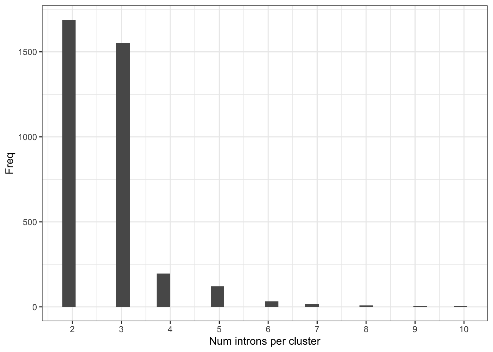

Untitled
Benjamin Fair
December 03, 2019
Last updated: 2019-12-03
Checks: 6 1
Knit directory: rna-seq-dhx38/analysis/
This reproducible R Markdown analysis was created with workflowr (version 1.5.0). The Checks tab describes the reproducibility checks that were applied when the results were created. The Past versions tab lists the development history.
The R Markdown is untracked by Git. To know which version of the R Markdown file created these results, you’ll want to first commit it to the Git repo. If you’re still working on the analysis, you can ignore this warning. When you’re finished, you can run wflow_publish to commit the R Markdown file and build the HTML.
Great job! The global environment was empty. Objects defined in the global environment can affect the analysis in your R Markdown file in unknown ways. For reproduciblity it’s best to always run the code in an empty environment.
The command set.seed(20191126) was run prior to running the code in the R Markdown file. Setting a seed ensures that any results that rely on randomness, e.g. subsampling or permutations, are reproducible.
Great job! Recording the operating system, R version, and package versions is critical for reproducibility.
Nice! There were no cached chunks for this analysis, so you can be confident that you successfully produced the results during this run.
Great job! Using relative paths to the files within your workflowr project makes it easier to run your code on other machines.
Great! You are using Git for version control. Tracking code development and connecting the code version to the results is critical for reproducibility. The version displayed above was the version of the Git repository at the time these results were generated.
Note that you need to be careful to ensure that all relevant files for the analysis have been committed to Git prior to generating the results (you can use wflow_publish or wflow_git_commit). workflowr only checks the R Markdown file, but you know if there are other scripts or data files that it depends on. Below is the status of the Git repository when the results were generated:
Ignored files:
Ignored: .Rproj.user/
Untracked files:
Untracked: analysis/20191203_DiffExpression.Rmd
Untracked: analysis/20191203_DifferentialSplicing.Rmd
Untracked: output/GeneExpression.DE.tab
Untracked: output/GeneExpression.gsea.tab
Unstaged changes:
Modified: _workflowr.yml
Note that any generated files, e.g. HTML, png, CSS, etc., are not included in this status report because it is ok for generated content to have uncommitted changes.
There are no past versions. Publish this analysis with wflow_publish() to start tracking its development.
Introduction
Exploratory differential expression analysis comparing RNA-seq from iPSC derived neurons from healthy control vs patient with biallelic mutations in DHX38 that may affect splicing and gene expression. Some things I want to check is what kinds of gene sets are differentially spliced, as well as if there are certain intron features associated with differentially spliced introns (weaker 5’ss motif perhaps)
Analysis
Raw RNA-seq data has been aligned and collapsed into leafcutter splice junction count table (rows of introns, columns of samples, each cell is exonic read counts) using code in code section of this repo. Also, leafcutter has been run to identify differentially spliced clusters of splice junctions, creating output files in output. Here I will explore that output and maybe some other exploratory analyses.
First, load necessary libraries
library(tidyverse)
library(knitr)
library(edgeR)
library(biomaRt)
library("clusterProfiler")
library("org.Hs.eg.db")
library(enrichplot)load in leafcutter output
sig <- read.table("../output/differential_splicing_significance.txt.gz", sep='\t', header=T)
head(sig) %>% kable()| cluster | status | loglr | df | p | p.adjust | genes |
|---|---|---|---|---|---|---|
| chr1:clu_1000_- | Success | 1.9730317 | 1 | 0.0469812 | 0.1628228 | GNB1 |
| chr1:clu_1001_- | Success | 0.2795714 | 2 | 0.7561078 | 0.8609193 | GNB1 |
| chr1:clu_1002_- | Success | 4.1659670 | 3 | 0.0396273 | 0.1455953 | GNB1 |
| chr1:clu_1003_- | Success | 0.0850228 | 1 | 0.6800713 | 0.8148571 | FAAP20 |
| chr1:clu_1004_- | Not enough valid samples | NA | NA | NA | NA | MORN1 |
| chr1:clu_1005_- | Not enough valid samples | NA | NA | NA | NA | PANK4 |
effect_sizes <- read.table("../output/differential_splicing_effect_sizes.txt.gz", sep='\t', header=T)
head(effect_sizes) %>% kable()| intron | logef | H | A | deltapsi |
|---|---|---|---|---|
| chr1:1787053:1787322:clu_1000_- | 0.2136016 | 0.9383983 | 0.9589358 | 0.0205375 |
| chr1:1787053:1787326:clu_1000_- | -0.2136016 | 0.0616017 | 0.0410642 | -0.0205375 |
| chr1:1815862:1817837:clu_1001_- | -0.0975622 | 0.4873418 | 0.4832734 | -0.0040684 |
| chr1:1815862:1825397:clu_1001_- | 0.1824135 | 0.0059958 | 0.0078669 | 0.0018710 |
| chr1:1817875:1825397:clu_1001_- | -0.0848513 | 0.5066623 | 0.5088598 | 0.0021974 |
| chr1:1825499:1839190:clu_1002_- | 0.0350052 | 0.5886054 | 0.6221619 | 0.0335565 |
Get a sense of number of intron clusters tested, number significant, etc
#how many clusters tested ("Success")
table(sig$status)
<=1 sample with coverage>min_coverage Not enough valid samples
212 1278
Success
3619 #histogram of Pvalues
hist(sig$p)
#how many significant (p.adjust < 0.1)
table(sig$p.adjust<0.1)
FALSE TRUE
2860 759 # merge significance and cluster tables
leafcutter.merged <- effect_sizes %>%
mutate(cluster=gsub("(.+?:).+?:.+?:(clu.+?)", "\\1\\2", intron, perl=T)) %>%
mutate(junc_id=gsub("(.+?:.+?:.+?):clu.+", "\\1", intron, perl=T)) %>%
left_join(sig, by="cluster")
# volcano plot of cluster-pvalues and largest within-cluster-delta-psi
leafcutter.merged %>%
mutate(abs.deltapsi = abs(deltapsi)) %>%
group_by(cluster) %>%
top_n(n=1, abs.deltapsi) %>%
mutate(sig=p.adjust<0.05) %>%
ggplot(aes(x=deltapsi, y=-log10(p), color=sig)) +
geom_point(alpha=0.05) +
theme_bw()let’s do a gsea to see what genes have differentially spliced clusters of introns. For this, we need an ordered gene list, with each gene appearing once. Since the biological question related to this is what are the genes or gene sets that are getting disrupted to cause the organismal phenotype, i think it is important to consider not just significance (P-value) but also effect size, perhaps as measured by delta-psi. Since significane and effect size can be quite different in a splicing analysis (see volcano plot above) because of low read counts on some junctions, let’s first filter out all non-significant splicing changes (to filter out the noisy effect size estimates) Then let’s make an ordered list based on the maximum delta-PSI for each gene.
#let's use a fairly permissive significance threshold to be more inclusive. how about FDR>0.3
hist(leafcutter.merged$p.adjust)
#filter and get max delta-psi for each gene. Keep in mind we need to filter out non-valid genes for the clusters or introns that have more than one gene listed in the genes column
OrderedGeneList <- leafcutter.merged %>%
filter(p.adjust<0.3) %>%
mutate(abs.deltapsi = abs(deltapsi)) %>%
group_by(genes) %>%
top_n(n=1, abs.deltapsi) %>%
filter(!grepl(",",genes)) %>%
arrange(desc(abs.deltapsi)) %>%
dplyr::select(genes, abs.deltapsi) %>%
deframe()
head(OrderedGeneList) PQBP1 FIGNL1 KANSL1 KANSL1 RNF220 PARP2
0.9807278 0.6522834 0.5597076 0.5597076 0.5443519 0.5362952 gsea.results <- gseGO(OrderedGeneList, ont="ALL", OrgDb=org.Hs.eg.db, keyType='SYMBOL', nPerm=100000)
gsea.results.df <- as.data.frame(gsea.results)
dim(gsea.results.df)[1] 0 9No significant GSEA results at the default P.adjust<0.5 threshold.
Ok, besides identifying the genes (or kinds of genes) through which the disease phenotype is potentially mediated, maybe the other questions I should be asking is what kinds of intron features distinguish differentially spliced introns, which may be more enlightening about general splicing mechanisms in these DHX38 mutants.
TO DO
what types of alternative splicing are more differentially spliced (alt 5’ss, exon-skipping, etc)
splice site motif analysis
Conclusions
sessionInfo()R version 3.6.1 (2019-07-05)
Platform: x86_64-apple-darwin15.6.0 (64-bit)
Running under: macOS Catalina 10.15.1
Matrix products: default
BLAS: /Library/Frameworks/R.framework/Versions/3.6/Resources/lib/libRblas.0.dylib
LAPACK: /Library/Frameworks/R.framework/Versions/3.6/Resources/lib/libRlapack.dylib
locale:
[1] en_US.UTF-8/en_US.UTF-8/en_US.UTF-8/C/en_US.UTF-8/en_US.UTF-8
attached base packages:
[1] parallel stats4 stats graphics grDevices utils datasets
[8] methods base
other attached packages:
[1] enrichplot_1.4.0 org.Hs.eg.db_3.8.2 AnnotationDbi_1.46.1
[4] IRanges_2.18.3 S4Vectors_0.22.1 Biobase_2.44.0
[7] BiocGenerics_0.30.0 clusterProfiler_3.12.0 biomaRt_2.40.5
[10] edgeR_3.26.8 limma_3.40.6 knitr_1.26
[13] forcats_0.4.0 stringr_1.4.0 dplyr_0.8.3
[16] purrr_0.3.3 readr_1.3.1 tidyr_1.0.0
[19] tibble_2.1.3 ggplot2_3.2.1 tidyverse_1.2.1
loaded via a namespace (and not attached):
[1] fgsea_1.10.1 colorspace_1.4-1 ggridges_0.5.1
[4] rprojroot_1.3-2 qvalue_2.16.0 fs_1.3.1
[7] rstudioapi_0.10 farver_1.1.0 urltools_1.7.3
[10] graphlayouts_0.5.0 ggrepel_0.8.1 bit64_0.9-7
[13] lubridate_1.7.4 xml2_1.2.2 splines_3.6.1
[16] GOSemSim_2.10.0 polyclip_1.10-0 zeallot_0.1.0
[19] jsonlite_1.6 workflowr_1.5.0 broom_0.5.2
[22] GO.db_3.8.2 ggforce_0.3.1 BiocManager_1.30.9
[25] compiler_3.6.1 httr_1.4.1 rvcheck_0.1.6
[28] backports_1.1.5 assertthat_0.2.1 Matrix_1.2-17
[31] lazyeval_0.2.2 cli_1.1.0 later_1.0.0
[34] tweenr_1.0.1 htmltools_0.4.0 prettyunits_1.0.2
[37] tools_3.6.1 igraph_1.2.4.1 gtable_0.3.0
[40] glue_1.3.1 reshape2_1.4.3 DO.db_2.9
[43] fastmatch_1.1-0 Rcpp_1.0.2 cellranger_1.1.0
[46] vctrs_0.2.0 nlme_3.1-142 ggraph_2.0.0
[49] xfun_0.11 rvest_0.3.5 lifecycle_0.1.0
[52] XML_3.98-1.20 DOSE_3.10.2 europepmc_0.3
[55] MASS_7.3-51.4 scales_1.0.0 tidygraph_1.1.2
[58] hms_0.5.2 promises_1.1.0 RColorBrewer_1.1-2
[61] yaml_2.2.0 memoise_1.1.0 gridExtra_2.3
[64] UpSetR_1.4.0 triebeard_0.3.0 stringi_1.4.3
[67] RSQLite_2.1.2 highr_0.8 BiocParallel_1.18.1
[70] rlang_0.4.1 pkgconfig_2.0.3 bitops_1.0-6
[73] evaluate_0.14 lattice_0.20-38 labeling_0.3
[76] cowplot_1.0.0 bit_1.1-14 tidyselect_0.2.5
[79] plyr_1.8.4 magrittr_1.5 R6_2.4.1
[82] generics_0.0.2 DBI_1.0.0 pillar_1.4.2
[85] haven_2.2.0 withr_2.1.2 RCurl_1.95-4.12
[88] modelr_0.1.5 crayon_1.3.4 rmarkdown_1.17
[91] viridis_0.5.1 progress_1.2.2 locfit_1.5-9.1
[94] grid_3.6.1 readxl_1.3.1 data.table_1.12.6
[97] blob_1.2.0 git2r_0.26.1 digest_0.6.22
[100] httpuv_1.5.2 gridGraphics_0.4-1 munsell_0.5.0
[103] ggplotify_0.0.4 viridisLite_0.3.0